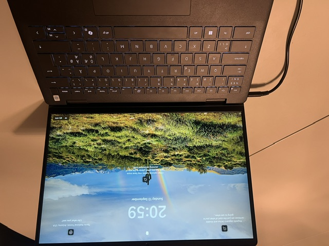

Min computer

Dette er et billede af min egen computer.
Type
Jeg har en Dell Pro 14 Essential PV14250, som jeg bruger til skolearbejde, kreative projekter og hverdagsbrug.
Specifikationer
- Processor: Intel Core 7 150U
- Hukommelse: 16 GB RAM
- Lagerplads: 512 GB SSD
- Operativsystem: Windows 11 Pro
- Skærm: 14" IPS, 1920 x 1200 (WUXGA), 60 Hz
- Trådløst: Wi-Fi 6 og Bluetooth
- Tastaturlayout: Nordisk
- Service og support: 1 års Dell Basic Onsite